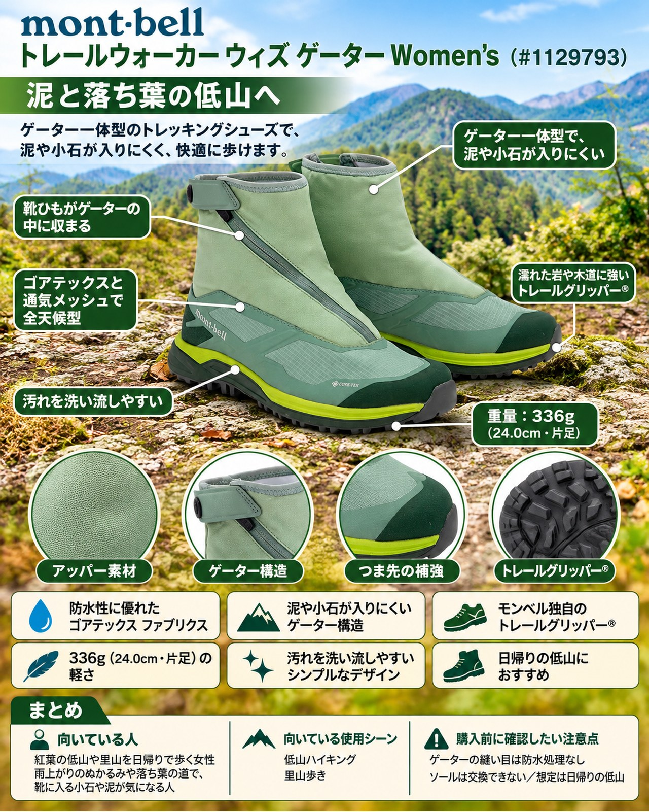

11月下旬、高尾山や六甲山などの近郊の低山は紅葉の見ごろを迎えています。一方で、今週は荒天の日があり、19日以降は冬型の気圧配置で冷え込みました。荒れた天気のあとの登山道は、ぬかるみと積もった落ち葉で、靴の中に泥や小石が入りやすい状態になりがちです。
導入
11月下旬、高尾山や六甲山などの近郊の低山は紅葉の見ごろを迎えています。一方で、今週は荒天の日があり、19日以降は冬型の気圧配置で冷え込みました。荒れた天気のあとの登山道は、ぬかるみと積もった落ち葉で、靴の中に泥や小石が入りやすい状態になりがちです。
今回紹介するのは、モンベルの「トレールウォーカー ウィズ ゲーター Women's」（品番 #1129793）です。足首まわりのゲーターを靴と一体にしたローカットの防水シューズで、公式は「低山ハイキングや自然散策」に向く全天候型としています。
YAMA FITでは11月1日に、BOA®で着脱しやすい「トレールウォーカー BOA Women's」を紹介しました。今回は同じシリーズでも「足元に泥や小石を入れない」ことに注目して見ていきます。紅葉の残る低山を、雨上がりでも気持ちよく歩きたい女性に向いた1足です。
基本スペック
※仕様と価格はモンベル公式オンラインストアの商品ページ（2026年11月21日確認）による。
| 項目 | 内容 |
|---|---|
| 商品名 | トレールウォーカー ウィズ ゲーター Women's |
| 品番 | #1129793 |
| 価格 | ¥23,500（税込） |
| 重量 | 336g（24.0cm・片足） |
| サイズ | 22.0〜26.0cm（0.5cm刻み） |
| ワイズ | レギュラー |
| カラー | グリーン（GN）、イエロー（YL） |
| アッパー | ポリエステル、ポリウレタン、ラバー |
| ライニング | ゴアテックス ファブリクス |
| ゲーター | ドライテック 3レイヤー（70デニール・ナイロンツイル） |
| アウトソール | トレールグリッパー®（ソール交換不可） |
| 靴ひも | コードロック式 |
ゲーター一体型で、泥や小石が入りにくい
最大の特徴は、靴と一体になったゲーターです。公式は、防滴性とストレッチ性のあるゲーターが足首にフィットし、小石や砂、泥の侵入を防ぐと説明しています。UOMOも、ローカットの動きやすさを保ったままゲーターを組み合わせ、小石や砂、泥から足元を守る点を紹介しています。落ち葉の下に小石が隠れた道や、ぬかるんだ下りで、立ち止まって靴を脱ぎ、中の小石を出す手間が減ります。別売りのゲーターを付け外しする必要もありません。
靴ひもがゲーターの中に収まる
靴ひもはコードロック式で、ロック部分をスライドするだけで締め具合を調整できます。公式は、ほどけた靴ひもがゲーターの中に収まることで、荒れた道でも足さばきがスムーズになるとしています。
ゴアテックスと通気メッシュで全天候型
ライニングにはゴアテックス ファブリクスを使っています。公式は、アッパーにゴアテックスの透湿性を最大限に生かすメッシュを使ったと説明しています。雨の日や雨上がりの湿った道でも、靴の中を快適に保ちやすい作りです。
濡れた岩や木道に強いトレールグリッパー®
アウトソールはモンベル独自のトレールグリッパー®です。BE-PALは、接地面との密着性を高める独自のコンパウンドが岩肌の細かな凹凸に食い込み、濡れた岩場や木道でのスリップを抑えると紹介しています。グリップの高いソールは減りやすいのが一般的ですが、配合の調整で既存のソールと同等の摩耗強度にしているとしています。
汚れを洗い流しやすい
公式の特集ページは、表面の凹凸が少ないため、泥汚れをシャワーとブラシで洗い流しやすいとしています。泥道を歩いた後の手入れが楽なのは、雨の多い季節にうれしい点です。
デメリット・注意点
- ゲーターの縫い目は防水処理なし：公式は「ゲーターの縫い目には防水処理を施していません」と明記しています。長く続く雨や深い水たまり、雪の中では、ゲーター自体の防水性を過信しないようにしましょう。
- ソールは交換できない：公式の仕様でソール交換不可とされています。底が減ったら買い替えになる点は、長く履き続けたい人は知っておきたいところです。
- 想定は日帰りの低山：公式の用途は低山ハイキングや自然散策です。今週のように高い山が大雪となる時期に、雪山や凍結した道へ向かう靴ではありません。
- ワイズはレギュラーのみ：Women'sの足囲はレギュラーで、ワイドモデルはMen'sのみです。幅広の足の人は試し履きで確認しましょう。
- 屋外で履いた後は返品・交換できない：公式は、屋外で使用した商品は返品・交換できないとし、まず室内で試し履きするよう勧めています。
向いている人・向いていない人
◎向いている人
- 紅葉の低山や里山を日帰りで歩く女性
- 雨上がりのぬかるみや落ち葉の道で、靴に入る小石や泥が気になる人
- 別売りのゲーターを付け外しする手間を省きたい人
- 悪天候の日の街履きも兼ねたい人（UOMOは街履きにも向くとしています）
△向いていない人
- 雪山や凍結した道、高い山へ行く人
- 足首までしっかり支える靴がほしい人、重い荷物を背負う縦走に行く人
- 幅広の足で、ワイドモデルを探している女性
まとめ
トレールウォーカー ウィズ ゲーター Women'sは、ローカットの歩きやすさに、泥や小石を防ぐゲーターを組み合わせた日帰り低山向けの防水シューズです。荒れた天気のあとの紅葉の山を、足元を気にせず歩きたい人に向いています。ゲーターの縫い目は防水処理がないこと、ソールは交換できないことを知ったうえで、室内で試し履きしてから選んでください。
この記事で紹介した商品
価格・重量・在庫は各ブランド公式サイトの記載（確認日つき）にもとづきます。商品を押すと、購入先を選べます。
この記事にはアフィリエイト広告が含まれます。リンク先での購入により、当サイトが報酬を受け取る場合があります。山行の前には、最新の気象とルートの状況を必ずご確認ください。